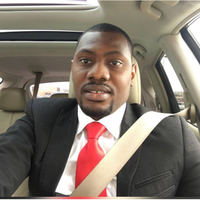

 My name is Oluwafemi Oyedeji. I was born in Lagos, Southwestern part of Nigeria. I graduated with a degree in electrical engineering from Poma International Business University, Benin. Right from the time I was a teenager, I played with computers a lot as my hobby, my passion, and my way of learning. Like most kids I enjoyed computer games. When my uncle gave me a computer as a reward for making honor roll in my fourth year at high school, I mastered DOS, Windows, and WordPerfect within six months. I then went on to teach myself programming basics.
Also, in my second year at college I took two programming classes in which I had an A’s. From then I developed a lot of interest in computer science and which to develop my career in that direction. I am currently enrolled at the boot camp coding program at the University of Minnesota to enable me achieving my dream of becoming a professional software engineer where I will have the opportunity to qualify for numerous computing jobs. At the completion of this program, I would have acquired the necessary technical know-how needed to build my own web and mobile applications which is my ultimate goal.